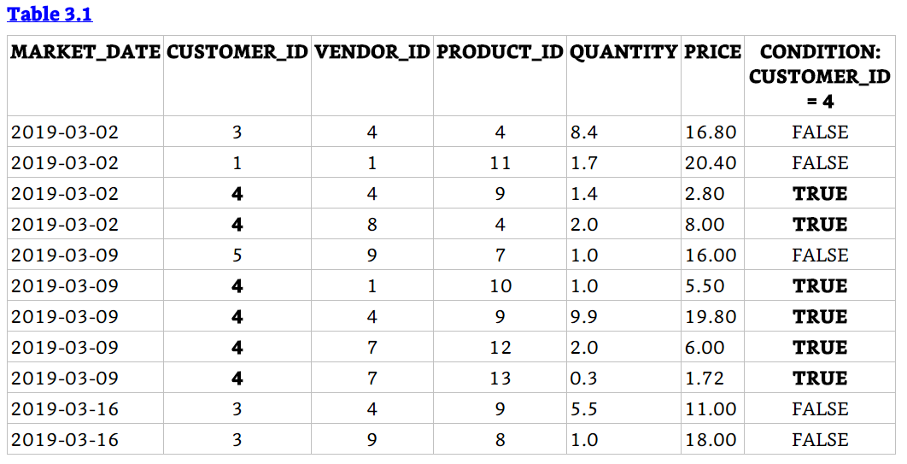

Chapter 3 The WHERE Clause
3.1 Chapter Notes
The chapter introduces the WHERE clause, which filters the results returned by your query. For example, the following code returns rows from the product table where the product_category_id is 1:
SELECT product_id, product_name, product_category_id
FROM farmers_market.product
WHERE product_category_id = 1
LIMIT 5| product_id | product_name | product_category_id |
|---|---|---|
| 1 | Habanero Peppers - Organic | 1 |
| 2 | Jalapeno Peppers - Organic | 1 |
| 3 | Poblano Peppers - Organic | 1 |
| 9 | Sweet Potatoes | 1 |
| 12 | Baby Salad Lettuce Mix - Bag | 1 |
We can use Boolean operators OR, AND, NOT, AND NOT, or OR NOT with the WHERE clause. For example:
SELECT market_date, customer_id, vendor_id, product_id, quantity, quantity * cost_to_customer_per_qty AS price
FROM farmers_market.customer_purchases
WHERE customer_id = 3 OR customer_id = 4
ORDER BY market_date, customer_id, vendor_id, product_id
LIMIT 5| market_date | customer_id | vendor_id | product_id | quantity | price |
|---|---|---|---|---|---|
| 2019-04-03 | 3 | 7 | 4 | 1 | 4.0 |
| 2019-04-03 | 4 | 7 | 4 | 1 | 4.0 |
| 2019-04-06 | 4 | 8 | 5 | 1 | 6.5 |
| 2019-04-10 | 4 | 7 | 4 | 5 | 20.0 |
| 2019-04-10 | 4 | 7 | 4 | 3 | 12.0 |
We can also use >, <, >=, <=.
SELECT market_date, customer_id, vendor_id, product_id, quantity, quantity * cost_to_customer_per_qty AS price
FROM farmers_market.customer_purchases
WHERE customer_id > 2 AND customer_id <= 4
ORDER BY market_date, customer_id, vendor_id, product_id
LIMIT 5| market_date | customer_id | vendor_id | product_id | quantity | price |
|---|---|---|---|---|---|
| 2019-04-03 | 3 | 7 | 4 | 1 | 4.0 |
| 2019-04-03 | 4 | 7 | 4 | 1 | 4.0 |
| 2019-04-06 | 4 | 8 | 5 | 1 | 6.5 |
| 2019-04-10 | 4 | 7 | 4 | 5 | 20.0 |
| 2019-04-10 | 4 | 7 | 4 | 3 | 12.0 |
And we can nest operators using parentheses:
SELECT product_id, product_name
FROM farmers_market.product
WHERE product_id = 10
OR (product_id > 3 AND product_id < 8)| product_id | product_name |
|---|---|
| 4 | Banana Peppers - Jar |
| 5 | Whole Wheat Bread |
| 6 | Cut Zinnias Bouquet |
| 7 | Apple Pie |
| 10 | Eggs |
We aren’t confined to filter on a single column, we could easily use the WHERE clause to return e.g. rows where the customer_id is < 5 and the vendor_id is 8 or similar.
Other options for filtering include BETWEEN:
SELECT *
FROM farmers_market.vendor_booth_assignments
WHERE vendor_id = 7 AND market_date BETWEEN '2019-04-03' AND '2019-04-16'
ORDER BY market_date| vendor_id | booth_number | market_date |
|---|---|---|
| 7 | 11 | 2019-04-03 |
| 7 | 11 | 2019-04-06 |
| 7 | 11 | 2019-04-10 |
| 7 | 11 | 2019-04-13 |
IN:
SELECT customer_id, customer_first_name, customer_last_name
FROM farmers_market.customer
WHERE customer_last_name IN ('Diaz', 'Edwards', 'Wilson')
ORDER BY customer_last_name, customer_first_name| customer_id | customer_first_name | customer_last_name |
|---|---|---|
| 17 | Carlos | Diaz |
| 2 | Manuel | Diaz |
| 10 | Russell | Edwards |
| 3 | Bob | Wilson |
LIKE:
SELECT customer_id, customer_first_name, customer_last_name
FROM farmers_market.customer
WHERE customer_first_name LIKE 'Jer%'| customer_id | customer_first_name | customer_last_name |
|---|---|---|
| 13 | Jeremy | Gruber |
| 18 | Jeri | Mitchell |
Here the % sign acts as a wildcard so that all first names that start with “Jer” and have any number (or zero) additional characters will be included.
IS NULL / IS NOT NULL - this one is pretty straightforward but note that NULL entries and blank entries are not the same:
SELECT *
FROM farmers_market.product
WHERE product_size IS NULL
OR TRIM(product_size) = ''| product_id | product_name | product_size | product_category_id | product_qty_type |
|---|---|---|---|---|
| 14 | Red Potatoes | NA | 1 | NA |
| 15 | Red Potatoes - Small | 1 | NA |
The TRIM function used above removes spaces from the beginning and end of a string, and so can be used to find rows with entries that are blank, or just a space, or any number of spaces. Each of these are different from a NULL entry.
The chapter ends with a section on subqueries - queries within queries. In the IN example above, we used a hardcoded list of names, but we could also feed the results of one query into the WHERE criteria of another query:
SELECT market_date, customer_id, vendor_id, quantity * cost_to_customer_per_qty price
FROM farmers_market.customer_purchases
WHERE market_date IN (
SELECT market_date
FROM farmers_market.market_date_info
WHERE market_rain_flag = 1
)
LIMIT 5| market_date | customer_id | vendor_id | price |
|---|---|---|---|
| 2019-07-31 | 3 | 7 | 18.4536 |
| 2019-07-31 | 8 | 7 | 26.7717 |
| 2019-07-31 | 19 | 7 | 25.7931 |
| 2019-07-31 | 22 | 7 | 7.4793 |
| 2019-09-21 | 6 | 7 | 13.9101 |
In the query above we use a query on the market_date_info table to return all the dates when it rained, and then query the customer_purchases table to return purchases on those days.
3.2 Exercises
Ex. 1
Question
Refer to the data in Table 3.1. Write a query that returns all customer purchases of product IDs 4 and 9.
Answer
Here’s Table 3.1:

SELECt *
FROM table3.1
WHERE PRODUCT_ID = 4 OR PRODUCT_ID = 9Ex. 2
Question
Refer to the data in Table 3.1. Write two queries, one using two conditions with an AND operator, and one using the BETWEEN operator, that will return all customer purchases made from vendors with vendor IDs between 8 and 10 (inclusive).
Answer
SELECt *
FROM table3.1
WHERE VENDOR_ID >= 8 AND VENDOR_ID <= 10SELECt *
FROM table3.1
WHERE VENDOR_ID BETWEEN 8 AND 10Ex. 3
Question
Can you think of two different ways to change the final query in the chapter so it would return purchases from days when it wasn’t raining?
Answer
We could change the criterion on market_rain_flag to 0:
SELECT market_date, customer_id, vendor_id, quantity * cost_to_customer_per_qty price
FROM farmers_market.customer_purchases
WHERE market_date IN (
SELECT market_date
FROM farmers_market.market_date_info
WHERE market_rain_flag = 0
)
LIMIT 5| market_date | customer_id | vendor_id | price |
|---|---|---|---|
| 2019-07-03 | 14 | 7 | 6.9201 |
| 2019-07-03 | 14 | 7 | 15.2382 |
| 2019-07-03 | 15 | 7 | 10.6947 |
| 2019-07-03 | 16 | 7 | 14.1198 |
| 2019-07-03 | 22 | 7 | 4.6134 |
Or we could use NOT IN instead of IN:
SELECT market_date, customer_id, vendor_id, quantity * cost_to_customer_per_qty price
FROM farmers_market.customer_purchases
WHERE market_date NOT IN (
SELECT market_date
FROM farmers_market.market_date_info
WHERE market_rain_flag = 1
)
LIMIT 5| market_date | customer_id | vendor_id | price |
|---|---|---|---|
| 2019-07-03 | 14 | 7 | 6.9201 |
| 2019-07-03 | 14 | 7 | 15.2382 |
| 2019-07-03 | 15 | 7 | 10.6947 |
| 2019-07-03 | 16 | 7 | 14.1198 |
| 2019-07-03 | 22 | 7 | 4.6134 |